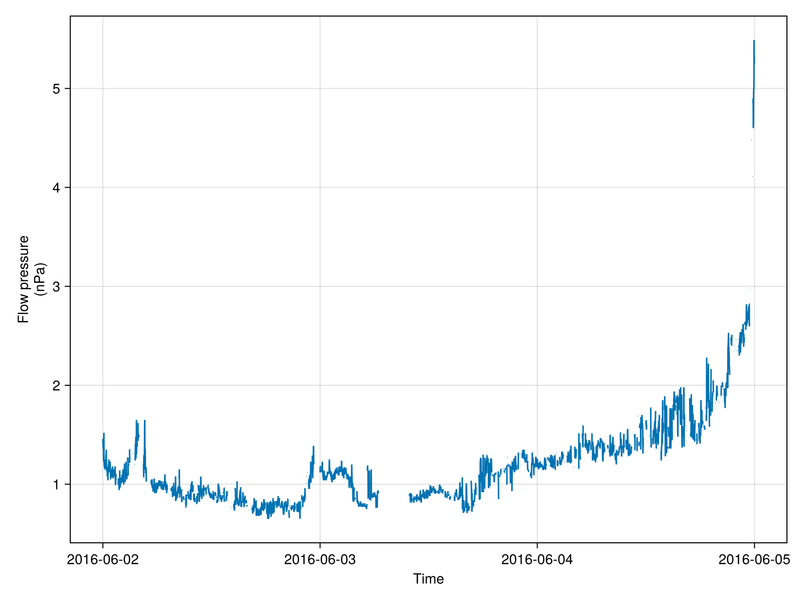
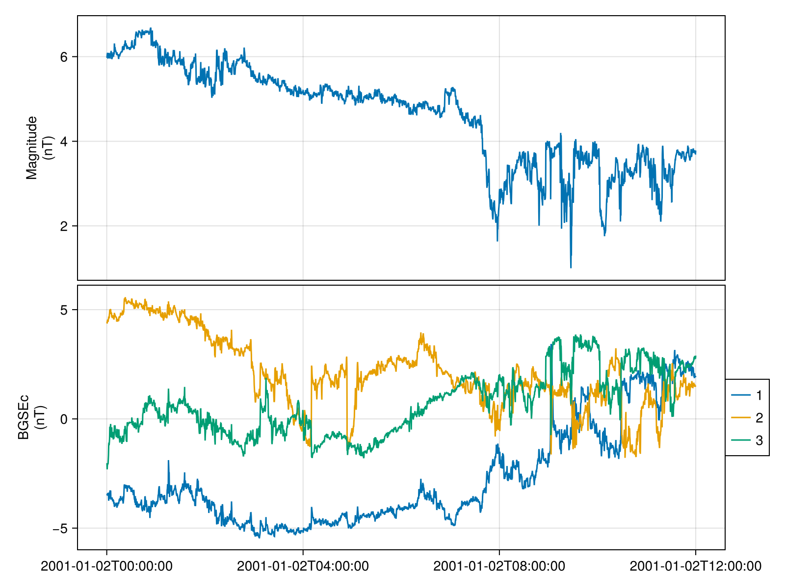
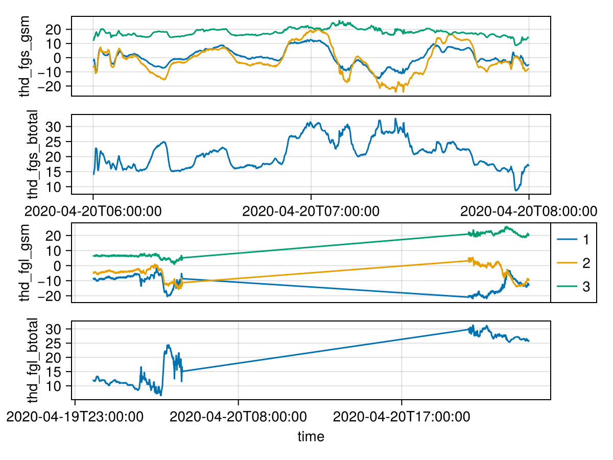

Quickstart
Get data with Speasy
using Speasy: get_data
using SPEDAS
# da = get_data("amda/imf", "2016-6-2", "2016-6-5")
da = get_data("cda/OMNI_HRO_1MIN/Pressure", "2016-6-2", "2016-6-5")Speasy.SpeasyVariable{Float32, 2, Tuple{Vector{Dates.DateTime}, PythonCall.Wrap.PyList{Any}}}: Pressure
Time Range: 2016-06-02T00:00:00 to 2016-06-04T23:59:00
Units: nPa
Size: (4320, 1)
Memory Usage: 85.365 KiB
Metadata:
FIELDNAM: Flow pressure
VALIDMIN: Any[0.0]
VALIDMAX: Any[100.0]
SCALEMIN: Any[0.0]
SCALEMAX: Any[100.0]
UNITS: nPa
FORMAT: F5.2
FILLVAL: Any[99.98999786376953]
VAR_TYPE: data
CATDESC: Flow pressure (nPa)
VAR_NOTES: Derived parameters are obtained from the following equations. Flow pressure = (2*10**-6)*Np*Vp**2 nPa (Np in cm**-3, Vp in km/s, subscript p for proton)
DISPLAY_TYPE: time_series
DEPEND_0: Epoch
LABLAXIS: Flow pressure
BIN_LOCATION: 0.0Plot the data
tplot(da)
Get data using Heliophysics Application Programmer's Interface (HAPI)
using HAPIClient: get_data
da = get_data("CDAWeb/AC_H0_MFI/Magnitude,BGSEc", "2001-1-2", "2001-1-2T12")2-element Vector{HAPIClient.HAPIVariable{Float64, N, A, Vector{Dates.DateTime}} where {N, A<:AbstractArray{Float64, N}}}:
Magnitude [Time Range: 2001-01-02T00:00:15 to 2001-01-02T11:59:58, Units: nT, Size: (2700,)]
BGSEc [Time Range: 2001-01-02T00:00:15 to 2001-01-02T11:59:58, Units: nT, Size: (2700, 3)]Plot the data
using SPEDAS
tplot(da)
Get data with PySPEDAS
using SPEDAS: tplot
using PySPEDAS.Projects
using DimensionalData
using CairoMakie
da = themis.fgm(["2020-04-20/06:00", "2020-04-20/08:00"], time_clip=true, probe="d")
# The same as more verbose `pyspedas.projects.themis.fgm(...)`(thd_fgs_btotal = [14.041459 14.05305 14.216009 ... 17.077389 17.131691 17.29505 ], thd_fgs_gse = [[-1.7729518 -1.7631109 13.817042 ]
[-1.9653597 -2.9186614 13.605403 ]
[-2.1836562 -2.5493717 13.814024 ]
...
[-5.1056423 -4.424149 15.684275 ]
[-5.2202334 -4.5247607 15.67707 ]
[-5.332478 -4.7276225 15.758586 ]], thd_fgs_gsm = [[-1.7729518 -5.863461 12.634836 ]
[-1.9653597 -6.9002457 12.083551 ]
[-2.1836562 -6.61096 12.394424 ]
...
[-5.1056423 -7.961029 14.21941 ]
[-5.2202334 -8.05679 14.189154 ]
[-5.332478 -8.272677 14.221331 ]], thd_fgs_dsl = [[-3.1773946 -2.4342604 13.458868 ]
[-3.3411803 -3.5781248 13.172766 ]
[-3.5816507 -3.219438 13.375422 ]
...
[-6.672332 -5.180851 14.841696 ]
[-6.7850657 -5.280993 14.817854 ]
[-6.9040947 -5.4875736 14.877459 ]], thd_fgl_btotal = [11.993431 12.040963 12.022435 ... 25.773767 25.715082 25.775879], thd_fgl_gse = [[ -8.791571 -1.0890869 8.084836 ]
[ -8.8856535 -1.069121 8.055243 ]
[ -8.838904 -1.0836748 8.077027 ]
...
[-12.81381 2.3108306 22.243053 ]
[-12.787768 2.3132088 22.189806 ]
[-12.831272 2.298039 22.236757 ]], thd_fgl_gsm = [[ -8.791571 -4.935273 6.495672 ]
[ -8.8856535 -4.9033065 6.4797792]
[ -8.838904 -4.92671 6.491552 ]
...
[-12.81381 -8.895052 20.517586 ]
[-12.787768 -8.866859 20.472351 ]
[-12.831272 -8.903103 20.50583 ]], thd_fgl_dsl = [[ -9.570214 -1.4852617 7.074418 ]
[ -9.660857 -1.4638649 7.0363145]
[ -9.616522 -1.4794722 7.062056 ]
...
[-15.060178 1.2539134 20.878357 ]
[-15.028772 1.2588131 20.82827 ]
[-15.076831 1.2414346 20.86969 ]], thd_fgl_ssl = [[ 9.6778555 -0.36622754 7.074418 ]
[ 9.649042 -1.5398227 7.0363145 ]
[ 9.369814 -2.6216235 7.062056 ]
...
[14.996932 -1.8636745 20.878357 ]
[14.645647 -3.5991132 20.82827 ]
[14.177208 -5.27814 20.86969 ]], thd_fgh_btotal = [14.7230835 15.043562 14.905504 ... 16.828907 16.697329 16.551622 ], thd_fgh_gse = [[-12.084445 -0.5120666 8.394829 ]
[-12.377207 -0.5704555 8.531593 ]
[-12.222445 -0.50265455 8.516646 ]
...
[ -8.262173 -11.83167 8.657955 ]
[ -8.128903 -11.668893 8.749781 ]
[ -8.141009 -11.599175 8.552152 ]], thd_fgh_gsm = [[-12.084445 -4.08904 7.349498 ]
[-12.377207 -4.200789 7.4476085]
[-12.222445 -4.133185 7.463424 ]
...
[ -8.262173 -14.099462 4.0191827]
[ -8.128903 -13.978614 4.1617455]
[ -8.141009 -13.844705 4.000544 ]], thd_fgh_dsl = [[-12.881051 -0.92257404 7.0708246 ]
[-13.1860285 -0.9875906 7.1737065 ]
[-13.030893 -0.9191391 7.1780963 ]
...
[ -9.049853 -12.240132 7.175751 ]
[ -8.927565 -12.082031 7.2886147 ]
[ -8.919615 -12.002751 7.0944095 ]], thd_fgh_ssl = [[10.33187 7.7475863 7.0708246]
[10.668355 7.8123536 7.1737065]
[10.68382 7.5169806 7.1780963]
...
[13.030098 -7.8700204 7.175751 ]
[12.746547 -7.949996 7.2886147]
[12.549457 -8.132446 7.0944095]], thd_fge_btotal = [565.6753 565.8391 565.9808 ... 663.571 663.814 664.1969], thd_fge_gse = [[216.75209 22.820293 522.0022 ]
[217.07552 22.973124 522.03864 ]
[217.1713 23.276157 522.1389 ]
...
[ 83.18716 277.8165 596.84534 ]
[ 83.11238 277.99548 597.0426 ]
[ 83.33693 278.6822 597.11694 ]], thd_fge_gsm = [[ 216.75209 -103.639885 512.119 ]
[ 217.07552 -103.50094 512.19104 ]
[ 217.1713 -103.23158 512.36127 ]
...
[ 83.18716 67.31102 654.886 ]
[ 83.11238 67.414604 655.13104 ]
[ 83.33693 68.03819 655.426 ]], thd_fge_dsl = [[161.58037 -2.3296218 542.1023 ]
[161.89754 -2.1787224 542.17926 ]
[161.98094 -1.880865 542.3033 ]
...
[ 19.692455 248.8686 614.8196 ]
[ 19.596794 249.03793 615.01636 ]
[ 19.809046 249.72029 615.1462 ]], thd_fge_ssl = [[ 5.4445404e-01 1.6159625e+02 5.4210229e+02]
[ 3.7870644e+01 1.5742101e+02 5.4217926e+02]
[ 7.3062119e+01 1.4457971e+02 5.4230328e+02]
...
[-1.3410313e+01 -2.4928606e+02 6.1481958e+02]
[-7.0709686e+01 -2.3959146e+02 6.1501636e+02]
[-1.2474939e+02 -2.1723309e+02 6.1514618e+02]])Plot the data
f = Figure()
tplot(f[1,1], [da.thd_fgs_gsm, da.thd_fgs_btotal])
tplot(f[2,1], [DimArray(da.thd_fgl_gsm), DimArray(da.thd_fgl_btotal)])
f